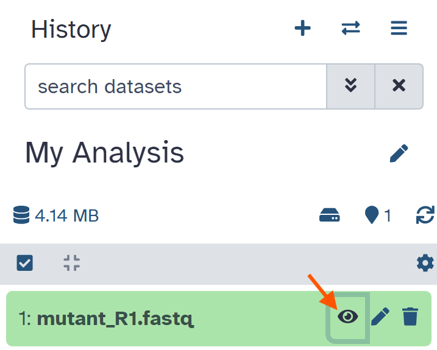
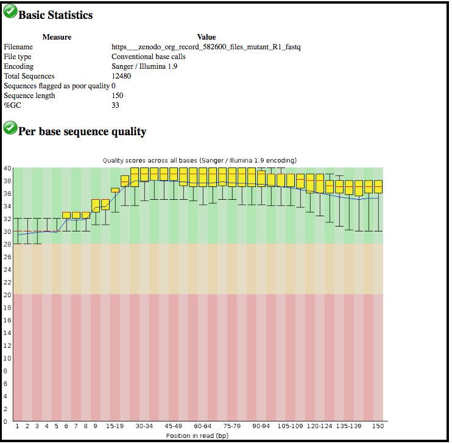

La página de inicio de Galaxy está dividida en tres paneles:
Herramientas a la izquierda
Panel de visualización en el centro
Historial de análisis y archivos a la derecha
La primera vez que uses Galaxy, no encontrarás archivos en tu panel de historial.
Acciones clave en Galaxy
Nombra tu historial actual
Tu “Historial” está en el panel de la derecha.
hands_on Práctica: Nombrar historial
Ve al panel History (a la derecha)
Haz clic en el nombre del historial (que por defecto es “Unnamed history”)
Teclea el nuevo nombre, por ejemplo, “Mi-Analisis”
Presiona Enter en tu teclado para guardar
comment ¿Cambiar el nombre no funciona?
Si cambiar el nombre no funciona, es posible que no hayas iniciado sesión, trata de iniciar sesión en Galaxy primero. Los usuarios anónimos tienen permitido tener un solo historial y no pueden cambiarle el nombre.
Cargar un archivo
Tus herramientas están en el panel de la izquierda.
hands_on Práctica: Cargar un archivo desde una dirección URL
En la parte superior del panel Tools (a la derecha), haz clic en galaxy-uploadUpload
hands_on Práctica: Visualizar el contenido de un conjunto de datos
Haz clic en el icono galaxy-eye (ojo) junto al nombre del conjunto de datos para visualizar su contenido

El contenido del archivo se desplegará en el panel central de Galaxy.
Este archivo contiene lecturas de secuenciación de ADN bacteriano en formato FASTQ:
Utilizar una herramienta
Echemos un vistazo a la calidad de las lecturas de este archivo
hands_on Práctica: Utilizar una herramienta
Teclea FastQC en el cuadro de búsqueda del panel de herramientas (parte superior)
Haz clic en la herramienta FastQCTool: toolshed.g2.bx.psu.edu/repos/devteam/fastqc/fastqc/0.72
La herramienta se desplegará en el panel central de Galaxy.
Selecciona los siguientes parámetros:
param-file“Short read data from your current history”: el archivo en formato FASTQ que cargamos
Deja sin cambios el resto de los parámetros
Haz clic en Execute
La herramienta se ejecutará y dos nuevos archivos de salida aparecerán en la parte superior de tu panel de historial.
Visualización de resultados
Vamos a ver el archivo de salida llamado FastQC on data 1: Webpage.
comment Comentario
Observa que Galaxy ha nombrado este conjunto de datos usando como base el nombre de la herramienta con que se generó (“FastQC”) y el archivo de entrada (“data 1”)
El nombre “data 1” significa que la salida corresponde al conjunto de datos número 1 en el historial actual de Galaxy (nuestro archivo FASTQ).
hands_on Práctica: Visualización de resultados
Haz clic en el icono galaxy-eye (ojo) junto a la salida “Webpage”.
La información se desplegará en el panel central

Esta herramienta resume la información de calidad de todas las lecturas en nuestro archivo FASTQ.
question Preguntas
¿Cuál es la longitud de las lecturas en nuestro archivo FASTQ?
¿Estas lecturas tienen valores de calidad más altos en el la región central de la secuencia o en los extremos?
solution Respuestas
150 bp
En el centro
Ejecutar otra herramienta
Vamos a ejecutar otra herramienta para filtrar las lecturas de baja calidad de nuestro archivo FASTQ.
hands_on Práctica: Ejecutar otra herramienta
Teclea Filter by quality en el cuadro de búsqueda del panel de herramientas (parte superior)
Haz clic en la herramienta Filter by qualityTool: toolshed.g2.bx.psu.edu/repos/devteam/fastq_quality_filter/cshl_fastq_quality_filter/1.0.1
Selecciona los siguientes parámetros:
param-file“Input FASTQ file”: Nuestro archivo inicial el formato FASTQ
“Quality cut-off”: valor de corte de calidad = 35
“Minimum percentage”: Porcentaje de bases en la secuencia que debe tener calidad mayor o igual al valor de corte de calidad = 80
Haz clic en Execute
Una vez que la herramienta se ha ejecutado, los archivos de salida aparecerán en la parte superior de tu panel de historial.
El conjunto de datos de salida se llamará “Filter by quality on data 1”.
Recuerda que Galaxy nombra el archivo de salida de acuerdo a la herramienta utilizada (“Filter by quality”) y al conjunto de datos de entrada (“data 1”).
Los números que aparecen frente a los conjuntos de datos en el historial no son importantes.
¿Cuáles son los resultados de esta herramienta de filtrado?
Podríamos hacer clic en el icono del ojo para ver el contenido de este archivo de salida, pero no será muy informativo, solo veremos una lista de lecturas.
hands_on Práctica: Obtener metadatos de un archivo
Haz clic en el nombre de un conjunto de datos de salida en el panel de historial.
Esta acción expandirá la información que se tenga sobre el archivo.
question Pregunta
¿Cuántas lecturas han sido descartadas?
solution Respuesta
Se descartaron 1786 lecturas de baja calidad
Volver a ejecutar la herramienta con otros parámetros
Ahora hemos decidido que nuestro conjunto de datos de entrada tiene que ser filtrado usando un criterio de calidad aún más estricto. Vamos a cambiar los parámetros de filtrado y volveremos a ejecutar la herramienta.
hands_on Práctica: Volver a ejecutar la herramienta
Haz clic en el icono galaxy-refresh (Run this job again) para el set de datos de salida Filter by qualitytool
La interfaz de la herramienta aparecerá en el panel central con los valores de parámetros que utilizamos previamente para generar este set de datos
Cambia los parámetros para un filtrado más estricto
Por ejemplo, podrías decidir que el 80 por ciento de las bases tengan una calidad de 36 o superior, en lugar de 35.
Haz clic en Execute
Visualiza los resultados: Haz clic en el nombre del conjunto de datos de salida para expandir la información. (Nota: No uses el icono galaxy-eye (ojo))
question Preguntas
¿Cuántas lecturas fueron descartadas bajo estas nuevas condiciones de filtrado?
Puedes volver a ejecutar la herramienta varias veces cambiando los parámetros. Cada vez que vuelvas a ejecutar la herramienta, el nuevo conjunto de datos de salida aparecerá en la parte superior de tu historial actual.
Crear un nuevo historial
Vamos a crear un historial nuevo.
hands_on Práctica: Nuevo historial
Crear un nuevo historial
Consejo: Para la creación de un historial nuevo
Haz click sobre el icono new-history en la parte superior del panel de historiales.
Cambiar el nombre de tu historial, e.g. “Nuevo-Analisis”
Consejo: Cambiando el nombre de un historial
Haz clic sobre Unnamed history (o el nombre que tenga el historial sobre el que estás trabajando) (Haz clic para cambiar el nombre del historial) en la parte superior de tu panel de historial
Escribe el nombre nuevo
Pulsa Enter
Este nuevo historial todavía no tiene datos.
Visualiza todos tus historiales
¿Dónde está tu primer historial llamado “Mi-Analisis”?
hands_on Práctica: Visualizar historiales
Haz clic en el icono View all histories (galaxy-columns) en la parte superior derecha de tu historial
Aparecerá una nueva página donde se desplegarán todos tus historiales.
Copia un conjunto de datos a tu historial nuevo
Haz clic en el archivo FASTQ en el historial “Mi-Analisis”
Arrastralo al historial “Nuevo-Analisis”
Esto generará una copia del conjunto de datos en tu historial nuevo (sin utilizar espacio de disco adicional)
Haz clic en el icono galaxy-home (o en Analyze Data en versiones anteriores de Galaxy) en la parte superior para regresar a la ventana de análisis
Figura 1: Copia un conjunto de datos arrastrándolo de un historial a otro
Tu ventana principal de Galaxy mostrará el historia actual como “Nuevo-Analisis” y contendrá un conjunto de datos.
Puedes regresar a la página “View all histories” en cualquier momento para cambiar de historial.
Conclusión
trophy ¡Bien hecho! Has completado el tutorial de Breve introducción a Galaxy, donde aprendiste a nombrar un historial, cargar un archivo, utilizar una herramienta y visualizar los resultados. Hay tutoriales adicionales disponibles para una introducción más detallada a las funciones de Galaxy.
Puntos clave
La interfaz gráfica de Galaxy tiene las herramientas a la izquierda, el panel de visualización en el centro, y el historial de análisis de tus datos a la derecha.
Puedes crear un historial nuevo en cada análisis. Todos tus historiales serán guardados.
Para subir datos a Galaxy, puedes cargar un archivo pegando la dirección de una página web. Existen otras formas de subir datos a Galaxy (que no serán cubiertas en este tutorial): cómo cargar un archivo desde tu computadora e importar un historial completo.
Selecciona una herramienta y cambia cualquier configuración para tu análisis.
Ejecuta la herramienta. Los archivos de salida se guardarán en la parte superior de tu historial.
Visualiza los archivos de salida haciendo clic en el icono del ojo.
Visualiza todos tus historiales y mueve archivos entre ellos. Cambia a un historial diferente.
Termina sesión en tu servidor de Galaxy. Cuando vuelvas a iniciar sesión (en el mismo servidor), tus historiales estarán allí.
Batut et al., 2018 Community-Driven Data Analysis Training for Biology Cell Systems 10.1016/j.cels.2018.05.012
details BibTeX
@misc{introduction-galaxy-intro-short,
author = "Anna Syme and Patricia Carvajal López and Alejandra Escobar-Zepeda",
title = "Breve introducción a Galaxy - en español (Galaxy Training Materials)",
year = "2021",
month = "07",
day = "26"
url = "\url{https://training.galaxyproject.org/training-material/topics/introduction/tutorials/galaxy-intro-short/tutorial_ES.html}",
note = "[Online; accessed TODAY]"
}
@article{Batut_2018,
doi = {10.1016/j.cels.2018.05.012},
url = {https://doi.org/10.1016%2Fj.cels.2018.05.012},
year = 2018,
month = {jun},
publisher = {Elsevier {BV}},
volume = {6},
number = {6},
pages = {752--758.e1},
author = {B{\'{e}}r{\'{e}}nice Batut and Saskia Hiltemann and Andrea Bagnacani and Dannon Baker and Vivek Bhardwaj and Clemens Blank and Anthony Bretaudeau and Loraine Brillet-Gu{\'{e}}guen and Martin {\v{C}}ech and John Chilton and Dave Clements and Olivia Doppelt-Azeroual and Anika Erxleben and Mallory Ann Freeberg and Simon Gladman and Youri Hoogstrate and Hans-Rudolf Hotz and Torsten Houwaart and Pratik Jagtap and Delphine Larivi{\`{e}}re and Gildas Le Corguill{\'{e}} and Thomas Manke and Fabien Mareuil and Fidel Ram{\'{\i}}rez and Devon Ryan and Florian Christoph Sigloch and Nicola Soranzo and Joachim Wolff and Pavankumar Videm and Markus Wolfien and Aisanjiang Wubuli and Dilmurat Yusuf and James Taylor and Rolf Backofen and Anton Nekrutenko and Björn Grüning},
title = {Community-Driven Data Analysis Training for Biology},
journal = {Cell Systems}
}
 Anna Syme
Anna Syme Patricia Carvajal López
Patricia Carvajal López Alejandra Escobar-Zepeda
Alejandra Escobar-Zepeda Preguntas:
Preguntas: